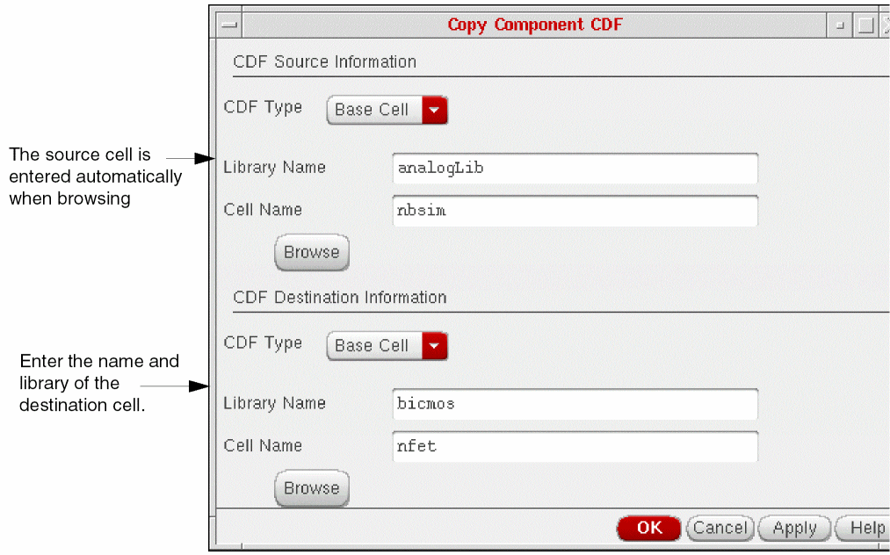

2
CDF Commands
- CIW CDF Commands
- SKILL CDF Functions
- Saving User-Level CDF Information
- Complex Pole Example
- NFET Example
CIW CDF Commands
This section describes commands for managing Component Description Format (CDF) information. These CDF commands are on the Tools menu of the Command Interpreter Window (CIW). The following menu is just one of many different Tools menus you might see, depending on which Cadence® software you own. However, all CIW Tools menus have the same CDF commands.
Edit
Copy
Delete
Scale Factors lets you set scaling factors for displaying CDF parameters.
Edit
Creates or edits CDF data for a library or cell. With this command, you can
- Add component parameters
- Delete component parameters
- Modify attributes of component parameters
- Rearrange the display order of component parameters
- Modify simulation information for all available simulators
- Modify interpreted label information for schematic annotation
- Modify special CDF properties that define CDF-generated forms, such as the Add Instance form
You can select CDF data for a cell or library on the Edit CDF form. Once you make a CDF selection, this form modifies itself and expands to include any existing CDF information.
Edit CDF Form (Initial)
- Scope lets you choose a CDF scope of Library or Cell.
-
CDF Layer
lets you choose a CDF level of Base, User, or Effective.
- Base mode writes information to the library or cell when you click Apply, so you must have write privileges to the library and cell.
-
User
mode writes data to the user-level CDF when you click Apply. The editor does not store data permanently in the library or cell, so you must save it to a file and reload this level on startup if you want to reuse the data. You do not need write privileges to the library or cell to attach user-level CDF information.
- Effective mode, in contrast to user mode, writes information to the user-level CDF only when the new information differs from base-level CDF information. The editor does not store data permanently in the library or cell, so you do not need write privileges.
For further information, see “Levels of CDF Data”. -
Library Name
is the name of the library whose CDF data you want to edit.
Select the library name using the Library Name cyclic field, or click the browse button to use the Library Browser form to select the library. - Cell Name is the name of the cell whose CDF data you want to edit.
Edit CDF Form
You can use the Edit CDF form to create, view, or edit a CDF description. The Edit CDF form gives you access to all portions of cell and library CDF descriptions. It consists of a header for identifying the library or cell CDF description, specifying procedures for preprocessing and postprocessing CDF data, and four tabs for details about component parameters, simulation information, interpreted labels, and other settings.
The following sections in this chapter describe the fields and buttons in the header. Subsequent chapters describe each of the four tabs.
Edit CDF Form (Redisplayed)
After you enter a CDF cell or library name, the Edit CDF form displays component parameter information in the Component Parameter tab as shown in the following figure. Click the other tabs to examine their contents.
File Name is the name of a file that you can create where you can store all the current editor field values. You can store the CDF description of a cell, including User or Effective levels, for future use by the Edit CDF form. You can type in the name of the file.
Load loads the CDF information in the file in the File Name field. The Edit CDF form redisplays to show the new information. The editor does not save CDF data to the cell or library until you click OK or Apply.
Save saves the contents of the Edit CDF form to the file in the File Name field.
CDF Dump
saves the CDF information in SKILL format to the file in the File Name field. You can use the SKILL file to load the CDF information later with the load("filename") command in the Command Interpreter Window (CIW), or customize it to modify the CDF information.
formInitProc lets you specify an optional procedure (a Cadence® SKILL language routine that you provide) that executes automatically when the component is placed on an instantiation form. For more information, see Initialization Procedure.
doneProc lets you specify an optional procedure (a SKILL routine that you provide) that executes after you change any parameter on the instantiation form. For more information, see Postprocessing Procedure.
Component Parameter tab
You use the Component Parameter tab of the Edit CDF form to view and edit component parameters. You can also add, delete, insert, and rearrange parameters and edit their attributes. You can also add a tooltip for a parameter under the Description column.
For information about the Component Parameter tab, see Chapter 3, “Defining Parameters.”
Simulation Information tab
The Simulation Information tab of the form lets you edit simulation information for simulators registered in the software.
For information about modifying the options for simulation information using the Simulation Information tab, see Chapter 4, “Modifying Simulation Information.”
Interpreted Labels Information tab
The Interpreted Labels Information tab of the Edit CDF form lets you edit interpreted label information in the CDF description. Chapter 5, “Specifying Label Information,” describes the options for interpreted labels.

Other Settings
The Other Settings tab of the Edit CDF form lets you edit CDF property fields that are not in any of the previous categories. Chapter 6, “Other CDF Information,” describes the options for other information.
Copy
Copies CDF data from one library or cell to a new library or cell.
Copy Component CDF Form
CDF Source Information
CDF Type is the type of CDF to copy. You can specify either a base-level or a user-level CDF description as the source CDF type. You cannot specify the effective-level CDF description as the source or the destination.
Library Name is the name of the library whose CDF data you want to copy.
Cell Name is the name of the cell whose CDF data you want to copy.
Browse displays the Library Browser.
CDF Destination Information
CDF Type is the type of destination CDF. You can specify either a base-level or a user-level CDF description as the destination CDF type. You cannot use effective-level CDF as a destination CDF type.
Library Name is the name of a library or a library that contains a cell into which you want to copy a CDF description.
Cell Name is the name of the cell into which you want to copy a CDF description.
Browse displays the Library Browser.
If you copy a cell (component) or library to another cell or library, the CDF data might not be copied. The transfer of CDF data occurs only if the target cell or library never existed and is created in the copy operation. If, however, the target cell or library already exists, or you copy only a cellview (a view of the component), the CDF data of the target cell (or library) remains unchanged. Use the Copy CDF command to avoid this problem.
Delete
Removes CDF data from a library or cell.
Delete Component CDF Form
CDF Type to Delete lets you choose the type of CDF to delete.
Library Name is the name of either a library whose CDF description you want to delete or a library that contains a cell whose CDF description you want to delete.
Cell Name is the name of the cell whose CDF description you want to delete.
Browse displays the Library Browser.
Scale Factors
Displays the Units Scaling Factors form, which you can use to set scaling factors for displaying CDF parameters. These abbreviations are used on the form:
Rounding with Scaling Factors
When a scaling factor is set to a value other than the input value, the output string is rounded based on the following standards:
-
If the input value is an integer, no rounding will occur.
Input: 1497 Output: 1.497K
-
If the number of decimal digits of the output value is greater than12, the output value will be rounded to maintain no more than12 decimal digits.
Input: 1234.12345678901234 Output: 1.234123456789K Input: 123456.7890123456 Output: 123.456789012346K Input: 123.4567890123456 Output: 123.456789012346
-
If the number of decimal digits of the input value is12 or less, the number of decimal digits in the output will be maintained unless it exceeds12.
Input: 1497.5 Output: 1.4975K Input: 1497.56789 Output: 1.49756789K Input: 123.12345678987 Output: 1.231234567899K
-
Trailing decimal zeros will be truncated to the number of decimal zeros in the input.
Input: 120000.0 Output: 120.0K Input: 11000000.00 Output: 11.00M Input: 11000000.0 Output: 11.0M Input: 11 Output: 11000000.0u
Units Scaling Factors Form
The following two entries are common to every field on the Units Scaling Factors form:
Resistance has a cyclic field for choosing how to show resistance.
| t_unitName | t_scaleFactor | Description |
Conductance has a cyclic field for choosing how to show conductance.
| t_unitName | t_scaleFactor | Description |
Capacitance has a cyclic field for choosing how to show capacitance.
| t_unitName | t_scaleFactor | Description |
Inductance has a cyclic field for choosing how to show inductance.
| t_unitName | t_scaleFactor | Description |
Length (Metric) has a cyclic field for choosing how to show length.
| t_unitName | t_scaleFactor | Description |
Time has a cyclic field for choosing how to show time.
| t_unitName | t_scaleFactor | Description |
Frequency has a cyclic field for choosing how to show frequency.
| t_unitName | t_scaleFactor | Description |
Voltage has a cyclic field for choosing how to show voltage.
| t_unitName | t_scaleFactor | Description |
Current has a cyclic field for choosing how to show current.
| t_unitName | t_scaleFactor | Description |
Power has a cyclic field for choosing how to show power.
| t_unitName | t_scaleFactor | Description |
SKILL Function
You can use the following Cadence SKILL language commands to set scale factors.
cdfGetUnitScaleFactor(t_unitName) =>t_scaleFactor
cdfSetUnitScaleFactor( t_unitName t_scaleFactor) => t / nil
For example, to set lengthMetric to m (millimeters), use the following command:
cdfSetUnitScaleFactor("lengthMetric" "m")
You can use abbreviations listed earlier instead of specifying the complete scale factor. For example, to change the scale factor for resistance to MOhms, enter:
cdfSetUnitScaleFactor("resistance" "M")
To display the current scale factor for power, enter:
cdfGetUnitScaleFactor("power")
The system returns the present value, such as auto.
You can also set the t_scaleFactor to auto or none using the cdfGetUnitScaleFactor SKILL command. In SKILL expressions only, you can use the following ISO1000 standard units in scale factors.
| Symbol | Name | Factor |
|---|---|---|
To display the Units Scaling Factors form and edit the scale factors, use the SKILL function cdfEditScaleFactors.
SKILL CDF Functions
You can use SKILL functions to create, view, or modify CDF information. CDF Functions in Virtuoso ADE SKILL Reference describes the SKILL functions you can use to do the same data entry operations you perform with the Edit CDF form.
To create, view, or modify CDF information by using SKILL functions, follow these steps:
-
Write or "dump" any existing CDF (base) into files by using the
cdfDumpfunction.cdfDump( "libName"
Consider the following examples.filename?cellName "cellName" ?level {’base | ’user} ?editg_edit)
Example 1:cdfDump("analogLib" "edtmp" ?cellName "nfet" ?level ’base ?edit t)
Example 2:cdfDump("myLib" "/home/me/nmos.new.cdf" ?cellName "nmos" ?level 'base ?edit nil)
If you specify the libName only, cdfDump writes only the library CDF data to the file specified in filename. The other arguments are optional. You must always specify a libName and a filename.
The?cellNameargument dumps the CDF description from that cell.
With the?levelargument, you can choose base- or user-level CDF. The default isbase.
The?editoption lets you automatically load the dump file into a temporary editor window. The default isnil.
You can specify a text editor by adding a line to your.cdsinitfile. The following example uses thevieditor.editor = "xterm -g 80x35+30+30 -e vi"
- Modify the CDF file to add any missing parameters or update any existing parameters.
-
In the Command Interpreter Window (CIW), load the updated CDF file by using the
loadSKILL function.load("
Example 1:filename")load("edtmp")
Example 2:load("nmos.new.cdf")
You will be able to reload the CDF description if you have write permissions for a cell. If you want to change the CDF description of a component but do not have the appropriate permissions, you can copy the cell to one of your own libraries. Copying a cell to a new cell also copies its CDF description, which you can then edit. Alternatively, you can change the user-level CDF description.
To create a CDF description for a new cell, you can first dump the CDF description from a similar cell, change the cell or library name, then load the file as described in this section. If the library and cell you specified exist, a new CDF description is created.
If you have the skillDev software, you can get a list of all the available CDF functions by typing the following command in the CIW:
listFunctions("cdf")
Saving User-Level CDF Information
User-level CDF information is not written to your system disk. When you exit the Cadence software, all user-level CDF information that you have not specifically saved is lost. If you want to save your user-level data, you must write it to a file.
If you are using the Edit CDF form in the Cadence Analog Design Environment, you can save any CDF description that you are working on with the File Name field and its associated buttons.
In the File Name field, enter the name of the file where you want to save the CDF data, and click Save.
- To retrieve this CDF information, open the Edit CDF form again.
- Select the name of the library, cell, and CDF Layer (User).
- Type the filename in the File Name field, and click Load.
Using SKILL
If you are using SKILL, use cdfDump to save the user-level CDF data and load to restore it.
-
Type the following SKILL command:
cdfDump("
An editor window appears, showing the file specified in filename.lib_name" "filename"?cellName "cell_name" ?level ’user ?edit t) - Save the contents of this new file.
-
To restore the user-level CDF data, type
load("
filename")
The load command reads the information in the file to determine which library, cell, and level of CDF description to access. It then executes the SKILL functions contained in the file, replacing the saved user-level data in the correct library and cell.
Complex Pole Example
To look at the CDF information for this component, you need the functional library, which is in the following location:
<your_install_dir>/etc/cdslib/artist/functional
Make sure that your cds.lib file includes the definition of this library.
Using the Edit CDF Form
Follow these steps to edit the CDF of the complexPole1 cell in the functional block library:
-
From the CIW menu banner, choose Tools – CDF – Edit.
The Edit CDF form appears. - In the Scope group box, select Cell.
- In the Library Name cyclic field, select the library functional.
-
In the Cell Name cyclic field, select the cell complexPole1.
The CDF description for the complexPole1 component appears in the form.
You should see a header and four tabs, each with information specific to the complex pole cell.
Using the header, you can save the current CDF descriptions to a named file or load another CDF description onto the named cell from a file. This is useful if you want to see the results of changing certain CDF properties. You can store the alternatives in different files and load them as required. You can also save the CDF data from one cell and then load (transfer) it onto another cell.
At the end of Chapter 3, “Defining Parameters,” you examine the Component Parameter tab in detail.
NFET Example
In the complex pole example, you examine an existing CDF description. In the NFET example, you create a new cell and a new CDF description.
Using the Edit CDF Form
When you copy a cell to another cell, all views and the CDF descriptions are copied if the destination cell did not previously exist. Copy the nbsim component from the analog library to create the basis for the new nfet component. You can then edit settings for parameters, simulation, labels, and other information in the CDF description of the nfet component.
-
Create a library called bicmos.
Make sure that you include this library in yourcds.libfile. - In the CIW, open the Library Manager by choosing Tools – Library Manager.
- Select analogLib to display its components (cells).
-
Scroll down the cell list and select nbsim.
-
Choose Edit – Copy and select bicmos from the To library cyclic field and specify the target cell as nfet.
- Click OK to make a copy of nbsim in the bicmos library under the cell name of nfet.
-
In the Copy Problems dialog box change the Don’t Copy action to Overwrite from the Action cyclic field for each view type.
-
Alternatively from the CIW, choose Tools – CDF – Copy.
The Copy Component CDF form opens. - Type the analogLib library and the nbsim cell in the CDF Source Information section.
-
Type the name of your destination library (bicmos) and the cell name (nfet) in the CDF Destination Information section.
Press the Tab key at the end of each entry.
 - Click Apply.
You can look at the CDF description of nfet using the Edit CDF form, as you did in the complex pole example in this chapter.
In Chapter 3, “Defining Parameters,” you will change some of the parameter attributes to make nfet a different part from nbsim.
Using SKILL
The following SKILL function copies the base-level CDF description of nbsim in analogLib to nfet in bicmos.
cdfCopyCDF( dest_cell "baseCellData" srcCDF )
This is possible only after you have performed these assignments, in order:
source_cell = ddGetObj( "analogLib" "nbsim" )
srcCDF = cdfGetBaseCellCDF( source_cell )
dest_cell = ddGetObj( "bicmos" "nfet" )
if( destCDF = cdfGetBaseCellCDF(dest_cell) then
cdfDeleteCDF( destCDF )
)
If the destCDF already has a CDF description of the specified type, a warning message will be displayed in the CIW indicating that the Base/User CDF already exists. In this case, the CDF copy function will not be performed.
Refer to Appendix D, “NBSIM Transistor CDF SKILL Description,” for an example of the SKILL CDF description of the nbsim cell.
Return to top